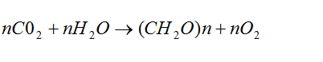
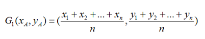
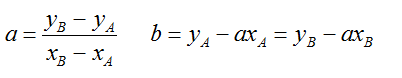
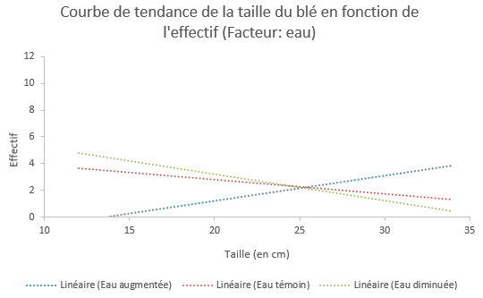
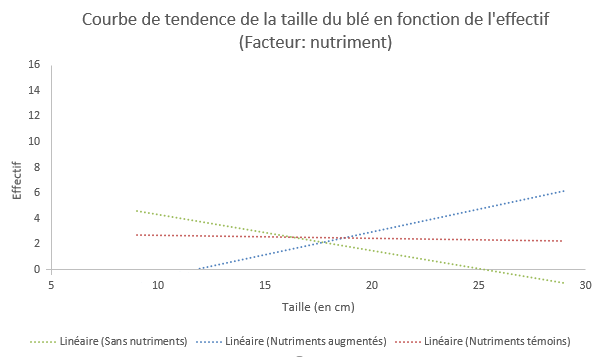
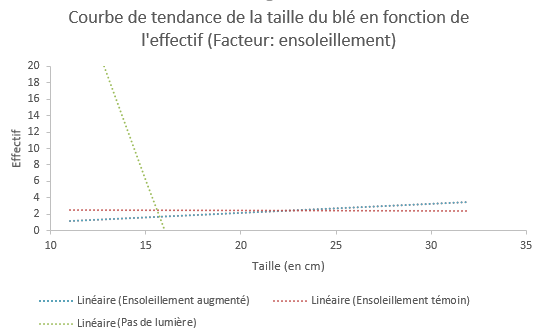
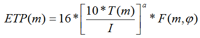
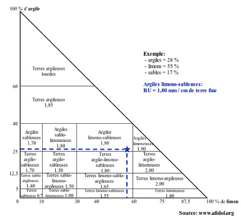

Recherche
Nos recherches se sont axées sur les besoins fondamentaux des plantes, c'est à dire les besoins nécessaires à la photosynthèse. Cette phase fondamentale dans la création de fARm est articulée autour de trois piliers : le soleil, l’eau et les nutriments.
Photosynthèse
La majorité des végétaux sont autotrophes, c'est-à-dire qu’ils vivent en autonomie, en se nourrissant du gaz carbonique présent dans l’atmosphère, d’eau et des sels minéraux qu’ils trouvent dans le sol. La photosynthèse permet de convertir l’énergie, émise par la lumière, en énergie chimique stable et assimilable par un organisme. La quasi-totalité de la photosynthèse se produit dans les feuilles des plantes qui sont en partie constituées de cellules de chlorophylle, qui transforment la matière inorganique (des photons) en matière organique (des sucres). Les sucres produits sont alors diffusés dans toute la plante.
Equation de la photosynthèse :

Ainsi, grâce à l’association du gaz carbonique de l’air et de l’eau présente dans le sol, la plante produit des glucides, qu'elle consommera, et rejette de l’oxygène. Par ce phénomène, 20 milliards de tonnes de carbone sont utilisés par les plantes vertes chaque année.
La photosynthèse est divisée en deux phases distinctes, la phase claire qui est un ensemble de réactions photochimiques qui dépendent de la lumière, elle permet la conversion de l’énergie lumineuse (photons) en énergie chimique. Et la phase sombre correspond au cycle de Calvin, entièrement enzymatique et indépendante de la lumière, elle permet de changer du dioxyde de carbone et de l’eau en glucides. C’est la phase d’assimilation du gaz carbonique.
Les plantes fabriquent par l’intermédiaire de la photosynthèse des aliments, les sucres. Ils comprennent le glucose et le fructose, qui sont convertis par la plante en saccharose afin de la garder en réserve. Le saccharose se trouve à l’état naturel dans les plantes et est à la base de toute source d’énergie alimentaire. C’est en partie pour cette raison que les plantes sont la base de la chaîne alimentaire.
La photosynthèse permet de convertir l’énergie, émise par la lumière, en énergie chimique stable et assimilable par un organisme.
Expérience
Nous avons donc mené une expérience sur ces trois axes de recherche : Nous avons planté cinquante graines de blé par pot dans neuf pots en testant trois facteurs différents. Nous avons d’abord fait varier l’apport en eau dans les trois premiers pots, l’apport en azote dans les trois pots suivants, et l’ensoleillement dans les trois derniers pots.
Après deux mois de pousse, nous remarquons des différences notables. Nous avons donc mesuré chacune des pousses, puis avons créé trois graphiques de la taille des pousses en fonction de leur effectif. Ensuite, pour rendre le graphique plus lisible, nous avons tracé une courbe de tendance (droite d'ajustement affine) pour chacun des graphiques selon la méthode de Mayer.
Il suffit pour cela de calculer l'équation de la droite affine suivante :
On doit alors séparer le nuage de points en deux groupes de même importance puis calculer les coordonnées des points moyens G1 et G2.

On peut alors trouver facilement l'équation de droite en appliquant les formules relatives aux droites affines :

Ce qui donne un résultat plus facile à interpréter



On remarque des résultats similaires dans les trois cas : la croissance du blé est grandement affectée par l'eau, les nutriments et le soleil. Sans soleil, la plante meurt une fois ses réserves vidées, et sans nutriments, sa croissance se trouve grandement ralentie. Néanmoins, lorsque l'on donne une trop grande quantité d'eau au blé, on observe une flétrissure des pousses, une trop grande exposition au soleil brule le blé, et une trop grande quantité d'azote pollue les sols. Il faut donc trouver un juste milieu.
Les résultats sont sans équivoque, le blé a besoin d’eau, de sels minéraux ainsi que de soleil pour pousser.
Besoin en eau
Les plantes ont toutes des besoins en eau différents, qui varient en fonction des saisons, du lieu de plantation. Pour calculer ce besoin, il est nécessaire de prendre en compte deux facteurs importants :
L’évapotranspiration réelle (ETR) est l’unique phénomène traduisant une perte d’eau chez la plante. Elle correspond à la somme de l’eau qui s’évapore du sol avec l’eau transpirée par la plante.
La réserve utile en eau d’un sol (RU) correspond à sa capacité à emmagasiner de l’eau. Une plante ne peut puiser de l’eau que depuis le sol, c’est par conséquent sa seule source d’eau.
Pour s’assurer que l’on respecte les besoins d’une plante en eau, il faut que la réserve utile de son sol ne se vide jamais, et ne soit jamais trop pleine. Il suffit alors de calculer en combien de temps la réserve utile se vide en calculant l’évapotranspiration.
Dans tous les calculs suivants, on convient qu’1mm d’eau correspond à la répartition d’un litre d’eau sur un mètre carré
Le calcul qui permet de la calculer est la formule de Thornthwaite :

Maintenant que l’on sait calculer la quantité d’eau consommée par la plante, il faut déterminer le volume d’eau qui devra être assigné à la plante. Le besoin en eau d’une plante est déterminé grâce à cette formule :
Il nous faut ensuite déterminer la réserve utile en eau de notre sol. Il existe pour cela deux moyens. On peut la déterminer avec précision avec une expérience simple, bien qu'il soit plus facile, si on connait le type de sol au moment de la plantation, d'utiliser le schéma suivant. On note tout de même que la précision de la méthode expérimentale est supérieure.

Les plantes ont toutes des besoins en eau différents, qui varient en fonction des saisons...
Les nutriments
Le sol est un élément important à prendre en compte lors de l’étude de la croissance des plantes. En effet, tous les nutriments importants pour la plante s’y trouve.
Les trois nutriments de base dont la plante a besoin et qu’elle absorbe en grande quantité sont l’azote (N), le phosphate (P) et le potassium (K). L’azote et le phosphate sont responsables de la croissance de la plante, tandis que le potassium régule la transpiration de la plante.
Contrairement à un sol de forêt, où l’apport en nutriment est constamment apporté par l’humus présent naturellement sur le sol, les réserves organiques des sols cultivés permettent un apport en éléments nutritifs très mineur. Ainsi pour combler tous les besoins de la plante, nous devons ajouter des nutriments, et en particulier de l’azote, habituellement comblés grâce à des engrais azotés. Lors de l’utilisation des engrais, on épand sur le sol une molécule composée d’azote et d'oxygène, le nitrate.
On trouve le nitrate dans le sol et dans l'eau de manière naturelle. Il provient de la décomposition des végétaux et des déjections des êtres vivants et est indispensable pour le développement des plantes Ainsi le nitrate apporte une fertilité des sols à long terme.
Néanmoins, comme vu dans la première partie, cette solution ne convient pas pour une culture durable. Plusieurs solutions alternatives sont alors utilisées :
Les légumineuses sont une famille de végétaux ayant la particularité de fixer l'azote présent dans l'air.
Cette fixation est permise par une bactérie naturellement présente dans le sol, les Rhizobiums. Les bactéries sont accueillies dans des excroissances situées dans les racines de la plante, les nodosités. Elles vivent en symbiose avec la plante : elle transforment l’azote présent dans l’air (N2) en azote ammoniacal (NH3), grâce une enzyme bactérienne (nitrogénase), assimilable par la plante. L’azote de l’air est fixé par la plante grâce à l’énergie issue de la photosynthèse. En échange, la plante apporte aux bactéries de l’énergie.
Il existe un système de priorisation de la nutrition azotée, l’azote présent dans le sol est assimilé en premier. Les résidus laissés sur le sol après la récolte sont riches en azote et contribuent à la nutrition en azote des prochaines cultures. Il est donc intérressant d’établir des cycles légumineuses/graminées (par exemple). Néanmoins, dans le cas où les légumineuses ne suffisent pas à subvenir aux besoins en nutriments de la plante, il peut être nécessaire de recourir à une autre solution : le lombricompostage
Un composteur ménager permet de non seulement créer un engrais liquide naturel, mais il permet aussi de réduire les déchets ménagers. Ses avantages sont nombreux : pas d'odeurs, écologique, pH neutre, augmente la RU du sol. De plus, il est facile d'utilisation : on dépose les ordures ménagères, et on récupère l'engrais quelques mois plus tard !
Si la dégradation des déchets est rapide, c'est grâce aux vers épigés (vers digesteurs qui se nourrissent des matières organiques de surface). Ils ont la capacité de manger, chaque jour, l'équivalent de leur propre poids en légumes en décomposition. Une partie des aliments est ensuite transformée en éléments nutritifs pour le ver, et le reste est éjecté sous forme de selle riche en nutriments, grâce aux enzymes du système digestif.
La fabrication du lombricomposteur n'est pas compliqué : on place 3 bacs superposable en perçant des trous au fond des bacs, et un robinet au fond du dernier bac.
On met en place une litière dans le premier bac à base de terreau et de carton broyé, et on place un carton humide au fond du second bac. On introduit ensuite les vers dans le bac contenant la litière.